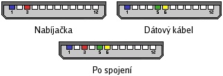

Monitoring serveru s mobilom Siemens
Po prečítaní článku o mobilných telefónoch Siemens v linuxe na českom serveri linuxsoft.cz som sa rozhodol, že pripojím mobil k jednému mnou spravovanému firewallovému systému a ten mi bude sms správami ohlasovať napríklad nedovolené prístupy k vybraným službám. Pripojenie som bol nútený realizovať cez sériový port, keďže na spomínanom serveri som zaviedol minimalistický “custom kernel” a myslím si, že podpora USB alebo nebodaj bluetooth by tam bola zbytočným prežitkom.
1. Hardware
Kolega mi požičal svoj staručký Siemens A35, ktorý sa však cez požičaný kábel a SCMxx nikdy neozval. Preto som zháňal ďalej a nakoniec ma správnym modelom - Siemens S45i - obdaril môj starší brat. S mobilom v ruke som sa vybral kúpiť sériový kábel. V prvom mobil shope ma predavač presviedčal, že také niečo sa už nevyrába, v ďalšom ho aspoň hľadal v katalógu. Samozrejme neúspešne. Ale nevzdal som sa a po nejakej tej hodinke behania po meste som ho predsa len kúpil.
2. Úprava kábla
Problém, ktorý treba pri neustálom pripojení telefónu značky Siemens k počítaču vyriešiť je jeho napájanie, pretože tieto telefóny používajú jediný konektor pre napájanie aj pre dátové prenosy. Preto bolo nutné rozobrať koncovku na dátovom kábli i na nabíjačke a integrovať ich do jednej. Je to síce veľmi jednoduchý zásah, no napriek tomu som to radšej zveril odborníkovi, ktorý bol vybavený mikrospájkou. Vykonaná operácia je znázornená na obrázku:

3. Príprava systému
Samozrejme treba správne nakonfigurovať sériový port.
Na distribúcii Slackware stačí v /etc/serial.conf zrušiť komentár na riadku prislúchajúcemu /dev/ttyS0 a skontrolovať, či sa pri štarte spúšťa inicializačný skript /etc/rc.d/rc.serial.
Pre samotnú komunikáciu s telefónom som použil na linuxsoft.cz opisovaný program SCMxx od nemeckého autora Hendrika Sattlera, ktorý je určený pre shell a teda ľahko použiteľný v skriptoch.
4. Oznamovanie nedovoleného prístupu
Celá filozofia oznamovania nedovoleného prístupu sa zakladá na použití TCP wrappers, ktoré slúžia na kontrolovanie a obmedzovanie prístupu k sieťovým službám skompilovaným s ich podporou.
TCP wrappers sa konfigurujú v súboroch /etc/hosts.allow a /etc/hosts.deny. Ja som použil démona sshd, ktorý umožňuje zakompilovať ich podporu.
V súbore /etc/hosts.allow som teda uviedol zoznam IP adries, ktoré majú k sshd prístup
sshd: 10.1.1.2 10.1.1.3
a do súboru /etc/hosts.deny som zapísal nasledujúci “kúzelný riadok” :)
ALL : ALL : spawn (scmxx --device=/dev/ttyS0 --send --sms --direct --text="Pokus o pripojenie na sluzbu %d z IP adresy %a" –number="0908xyzxyz") & : DENY
Ak sa niekto pokúsi pripojiť na ssh démona je jeho IP adresa najskôr porovnaná s údajmi v súbore hosts.allow.
Ak sa zhoduje, prístup je umožnený.
Ak sa nenájde zhoda, pokračuje sa v hosts.deny, kde je uvedená pre všetky služby a všetky hosty jediná akcia - poslať sms správu administrátorovi a odmietnuť prístup.
Reťazce %d a %a pritom nahradia TCP wrappers konkrétnymi údajmi.
Samozrejme, aby mala takáto funkcia význam, musí konfigurácia firewallu umožňovať prístup k portu 22/TCP.
5. Záver
Toto je len malá ukážka možností, ktoré poskytuje mobilný telefón pripojený k linuxovému serveru a taktiež iba zlomok toho, čo sa dá docieliť správnou konfiguráciou TCP wrappers. Čo by ste povedali na wrappermi riadené pravidlá firewallu, na vzdialené ovládanie servera sms správami, oznamovanie o výpadkoch linky alebo informovanie o vyťažení systému..
Špeciálne poďakovanie si zaslúži môj brat Stano a Andrej Eliáš, bez ktorých by tento článok nevznikol.